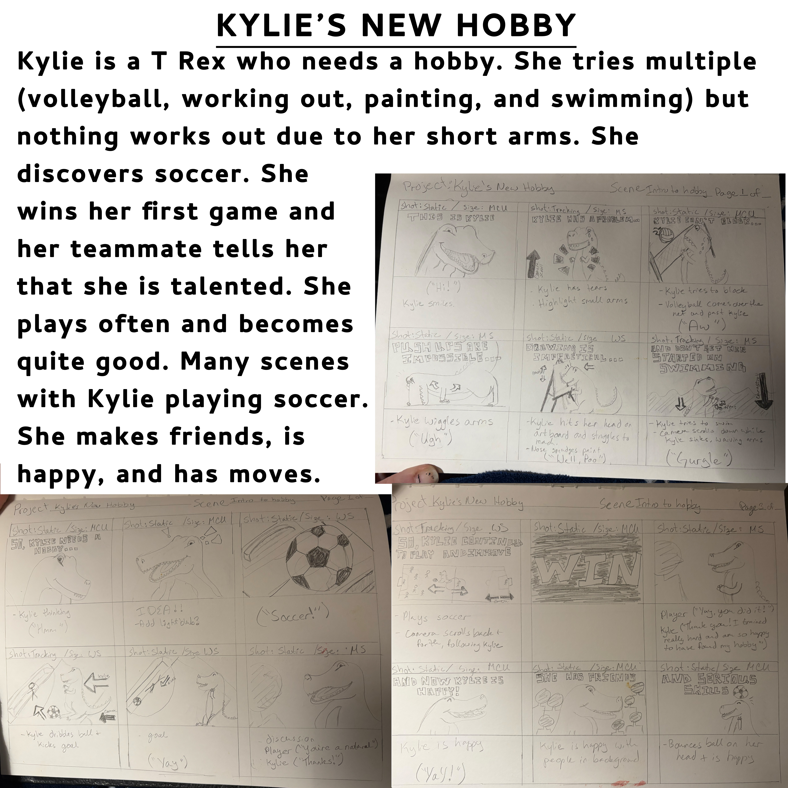
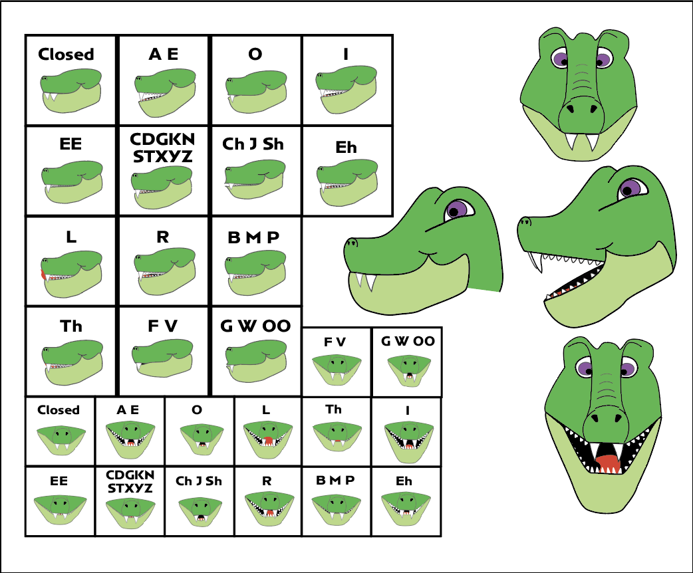
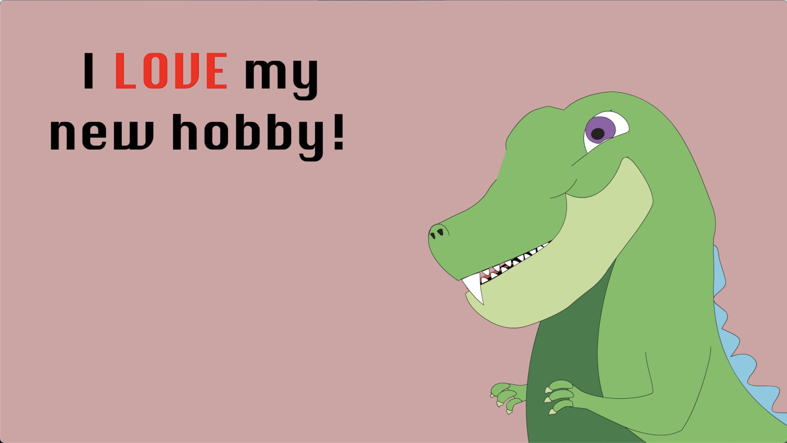
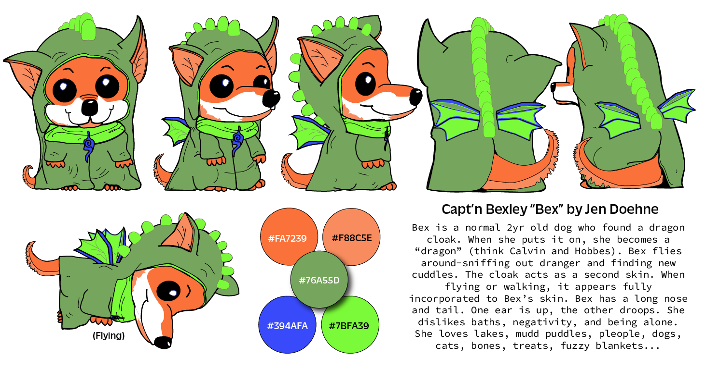
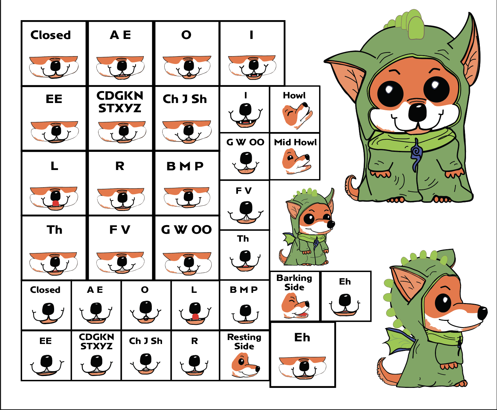
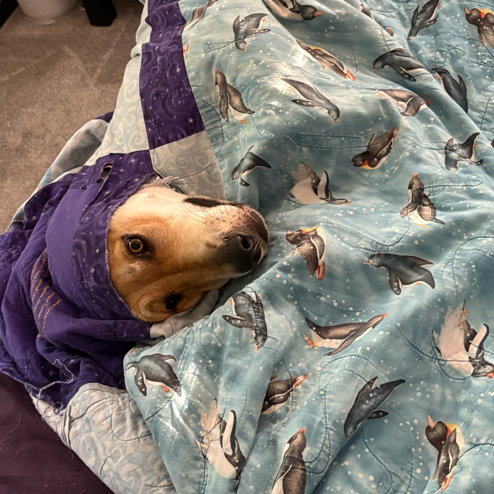
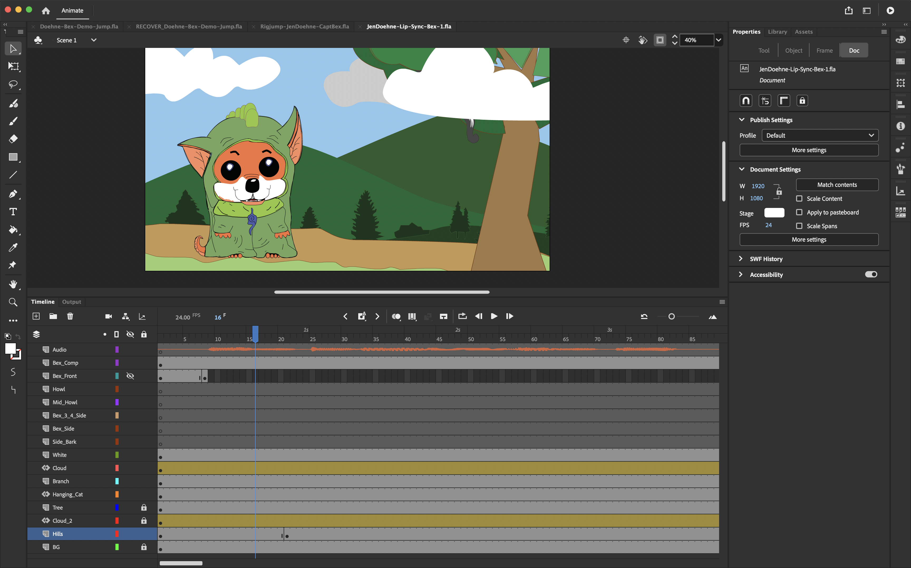

SOFTWARE
Adobe Animate
Adobe Illustrator
Adobe Photoshop
MY ROLE
Concept Development
Script Development
Motion Design
Video Editing
DELIVERABLES
Animated Short Videos
Compositing & Animation
Editing & Sound Design
TOOLS & CREDITS
Envato Elements licensed audio assets
Music: “Fly Me to the Moon”
by Frank Sinatra
SHORT 01 · CHARACTER & TIMING
Kylie's Hobbies
A T-Rex tests mismatched hobbies until she finds a sport that fits her physical comedy and timing.
01 / THE CONCEPT
A Tough Issue.
A Wonderful Solution.
Kylie is bored. She tries various hobbies, but nothing feels right. Also, Kylie is a T-Rex—and therefore ill-disposed for many hobbies. Finally, she discovers soccer and it changes her life!

02 / CREATIVE DIRECTION
Following the Imagination
Familiar settings meet unexpected characters, shifting moods, and moments that blur the line between the ordinary and surreal.

Hand-drawn character and background storyboard.
03 / PRODUCTION PROCESS
Experiment. Assemble. Refine.
Building the experience of a T-Rex discovering a hobby.

Visual assets created in Adobe Illustrator, which were then refined using Adobe Animate. Compositing, animation, transitions, pacing, and sound design shaped the final animation.
04 / BEHIND THE SCENES
Inside the Timeline
A look at the editing and animation workflows behind the short.

SHORT 02 · MOTION & ANTICIPATION
Bex's Flight
A dog in a dragon cloak approaches a cliff edge and turns a simple walk into lift-off.
01 / THE CONCEPT
A Great Cloak.
A Soaring Surprise.
Bex is wearing her favorite dragon cloak, walking toward a cliff when she suddenly takes flight...!

02 / CREATIVE DIRECTION
Following the Imagination
Familiar settings meet unexpected characters, shifting moods, and moments that blur the line between the ordinary and surreal.

Hand-drawn character and background.
03 / PRODUCTION PROCESS
Experiment. Assemble. Refine.
Building the experience of a dog dressed as a dragon, learning that she can fly.

Visual assets created in Adobe Illustrator, which were then refined using Adobe Animate. Compositing, animation, transitions, pacing, and sound design shaped the final animation.
04 / BEHIND THE SCENES
Inside the Timeline
A look at the editing and animation workflows behind the short.

SHORT 03 · PACING & SURPRISE
Bex's Afternoon
A calm afternoon song turns into a playful comedic twist in a bright, character-driven scene.
01 / THE CONCEPT
A Sunny Day.
A Sudden Twist.
Bex is minding her own business, singing a song when suddenly...!

02 / CREATIVE DIRECTION
Following the Imagination
Familiar settings meet unexpected characters, shifting moods, and moments that blur the line between the ordinary and surreal.

Hand-drawn character and background.
03 / PRODUCTION PROCESS
Experiment. Assemble. Refine.
Building the experience of a dog dressed as a dragon singing a song and enjoying a nice day.

Bex is modeled after my dog Capt'n Bexley.
04 / BEHIND THE SCENES
Inside the Timeline
A look at the editing and animation workflows behind the short.

Have a project in mind? Let's move it.
CONTACT ME